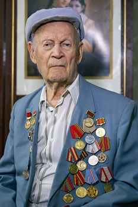
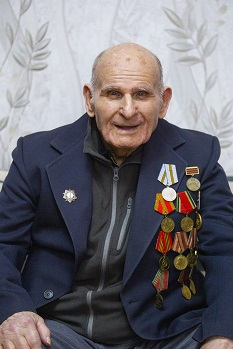

Уважаемые граждане города Бельцы
| Фото | Имя | Деятельность | Заслуги |
|---|---|---|---|
|
 |
Гупалов Василий | Преподаватель | Ветеран Второй мировой войны. С 1942 по 1945 год участвовал в боевых действиях на Юго-Западном, Воронежском, 1-м и 2-м Украинских фронтах, участвуя в крупных наступательных операциях. После окончания войны занимался преподавательской деятельностью по классу баян и аккордеон в Детской музыкальной школе (нынешняя Школа искусств им. Ч. Порумбеску мун. Бэлць), которую позже возглавил в должности директора. |
|
 |
Флоря Петр | Плотник | Ветеран Второй мировой войны. Был призван на фронт с июля 1944 г. по май 1945 г. Служил в стрелковом полку, принимая участие в активных боевых действиях. После демобилизации работал в должности плотника и штукатура в ремонтно-строительной конторе. |
| Анастасия Димитраш | Врач | Врач высшей категории, заведующая наркологическим отделением № 7 ПМСУ «Психиатрическая больница мун. Бэлць» (2003 – 2023 гг.). Внедряла и применяла инновационные методы лечения пациентов с алкогольной и наркотической зависимостью посредством индивидуальной, групповой и разговорной терапии, способствуя интеграции данных лиц в обществе. Неоднократно поощрялась за свою работу благодарностями и почетными грамотами. |